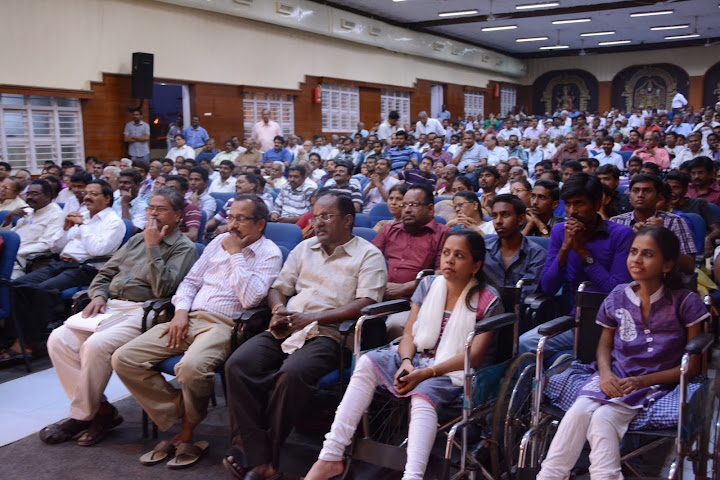
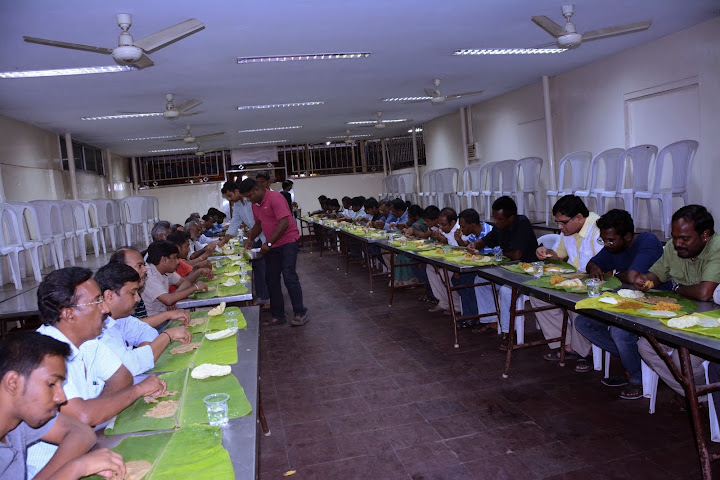
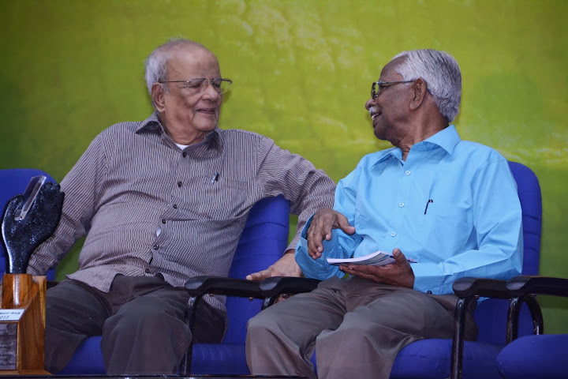
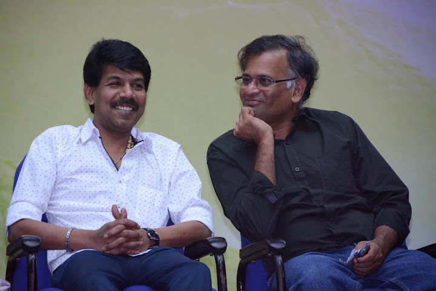
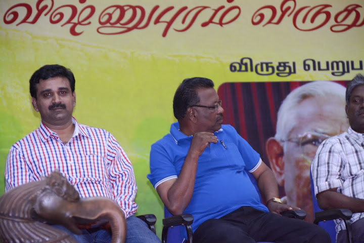
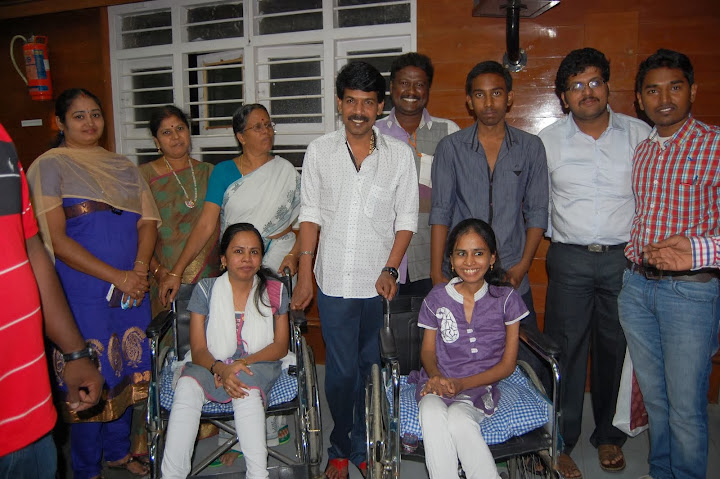
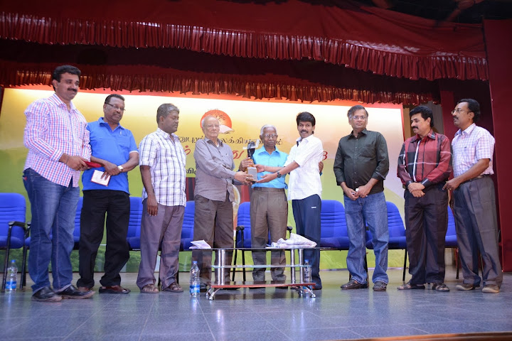

Living Tamil Association for World Literature (LTAWL)
The 2013 Vishnupuram Literary Circle Award was presented to the writer Thelivathai Joseph, whose fiction gave literary voice to the tea-estate Tamils of Sri Lanka's hill country — translated and adapted from the original Tamil account.
Friends began arriving in Coimbatore on the twenty-first of December, gathering at a wedding hall taken for the occasion as a shared residence. More than thirty had come in by the morning, and the ordinary business of settling in — bathing, changing, catching up — slid without a seam into three unbroken days of conversation, laughter and old embraces. It is, the account notes, an unwritten rule of these Vishnupuram gatherings that no visiting writer should ever leave feeling slighted: harsh public criticism has no place here, not because it is forbidden but because the atmosphere itself will not permit it. What the gathering allows instead is refined literary talk that can turn serious without ever turning bitter.

The senior writer Indira Parthasarathy arrived by late morning and, almost without anyone deciding it, the friends' circle turned itself into an impromptu meeting with him that ran past two in the afternoon. A former college teacher and a gifted talker, he wove his favourite poets — Shakespeare, Kambar and Bharati — through anecdote after anecdote, recalling the literary and musical world of the 1950s and '60s with an ease that made even old, half-forgotten names feel present again: the story of the singer and actor V. V. Sadagopan, who vanished after stepping off a train, and of how the novel Thandira Bhumi came to be written almost by accident, at his own urging, from a single first chapter dashed off with no plan at all. Because his hearing aid was giving trouble that day, questions from the floor had to be written down and passed to him — one of which, about a story of his and his private life, he turned aside with a dry line about being asked a film star's kind of question.
Eight meals were laid out over the two days, each feeding on the order of a hundred people — writers, readers and friends eating together with the unhurried informality of a wedding feast. The afternoon session on the twenty-first turned to Nanjil Nadan and a discussion of his writing on minor literatures, and from there to an old, rarely-aired argument about metre and sound in Tamil verse — Nanjil Nadan's view being that lines built on metre simply stay in the memory in a way free verse does not. Indira Parthasarathy returned in the evening for a longer exchange on literature and contemporary political thought.


Thelivathai Joseph received the Vishnupuram Literary Circle Award for 2013. Born on a tea estate near Nuvara Eliya in Sri Lanka's hill country and long associated with the Malaiyaha Tamil community descended from indentured plantation labourers, he took his own name from the estate of his birth as a deliberate act of identification with that community, at a time when many who had made their way out of the estates preferred not to be known as having come from them. He had worked as a schoolteacher and later as an accountant before his first novel, published in the 1970s, brought him recognition as one of the principal chroniclers of hill-country Tamil life and its literature.
He arrived in Coimbatore on the night of the twenty-first, and conversation with him continued past midnight. Much of it turned on a story he told of a boyhood friend from the estate who had been repatriated to India under the Indo–Sri Lanka agreement and settled near Coonoor — a friend Thelivathai never saw again in life, and whose grave, overgrown with grass, he had only recently traced and visited with the help of another friend. From there the talk moved to the long, often quietly humiliating search for identity among hill-country Tamils in Sri Lanka, including the casual assumption, common in his youth, that anyone who did not attach an estate name to their own must be ashamed of where they came from.

The award itself was presented at the Nani Kalai Arangam in Coimbatore, a hall with an official seating of 550 that on the day held over 600 people. The prize consisted of one lakh rupees together with a sculpture in wood, metal and crystal, and was presented jointly by Indira Parthasarathy and Bala. Two new books by Thelivathai Joseph were released at the ceremony: the short-story collection Meenkal (“Fish”), brought out by Natrinai Publications and released by the photographer Sezhiyan, and the novella Kudai Nizhal (“Umbrella Shade”), published by Ezhuthu and released by Yuvan Chandrasekhar. Sudha Srinivasan and Nanjil Nadan together honoured Thelivathai's wife, Philomena, with a silk saree.

In his remarks, Indira Parthasarathy spoke about how little recognition Tamil literature commands even among its own readers, observing that senior Sri Lankan Tamil writers of real standing remain largely unknown within Tamil Nadu itself. Suresh Kumar Indrajith offered a close literary reading of Thelivathai's narrative craft. Jeyamohan's own remarks reached for an old short story about a condemned prisoner's last meal as a way of describing what it means to keep writing without fame, money or social standing to show for it. Thelivathai Joseph, accepting the award, said plainly that he took it as recognition of the hill-country plantation community as a whole, and not as a personal honour to himself alone.


The gathering broke up gradually rather than all at once, friends leaving in twos and threes over the following day. Thelivathai Joseph was seen off to the airport the next morning; Jeyamohan himself left that evening on the 8:29 train from Coimbatore to Nagercoil, in the company of Ajithan and Devathadevani, carrying home the particular tiredness that these gatherings always leave — the good kind, the kind that comes from being reminded that a festival cannot be made to last, and does not need to.

Translated and condensed from the original Tamil account: jeyamohan.in/43537